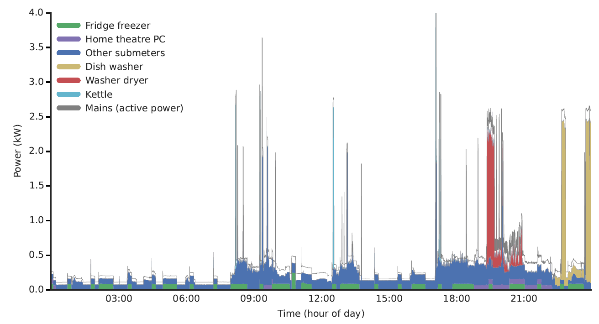
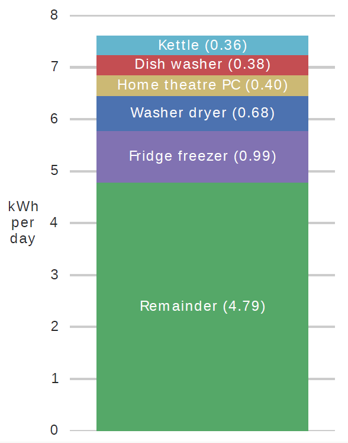
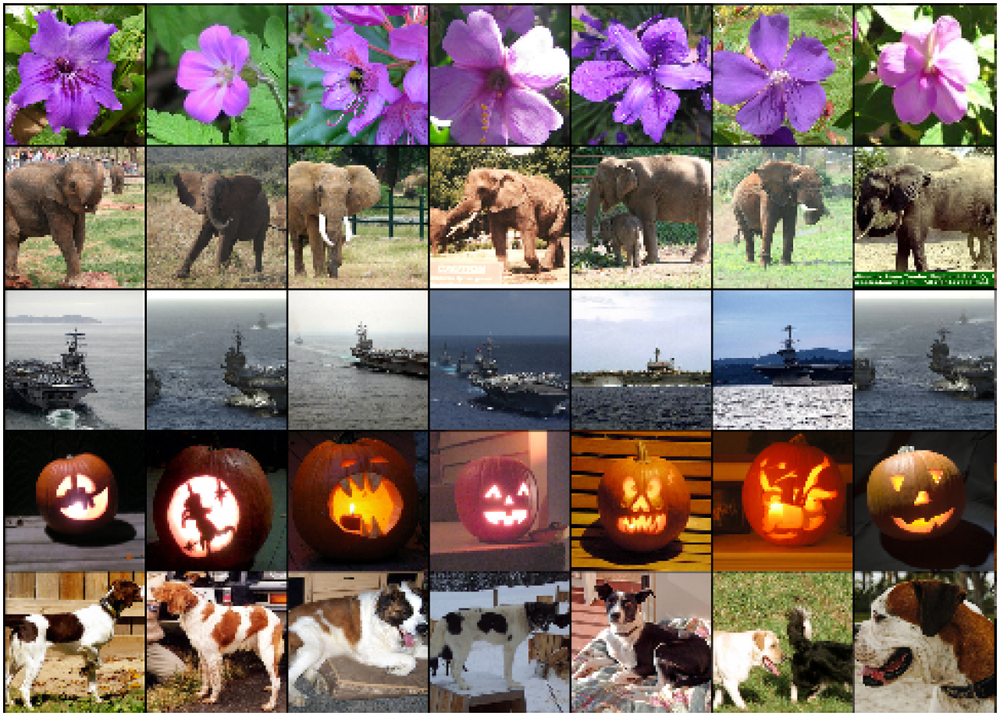
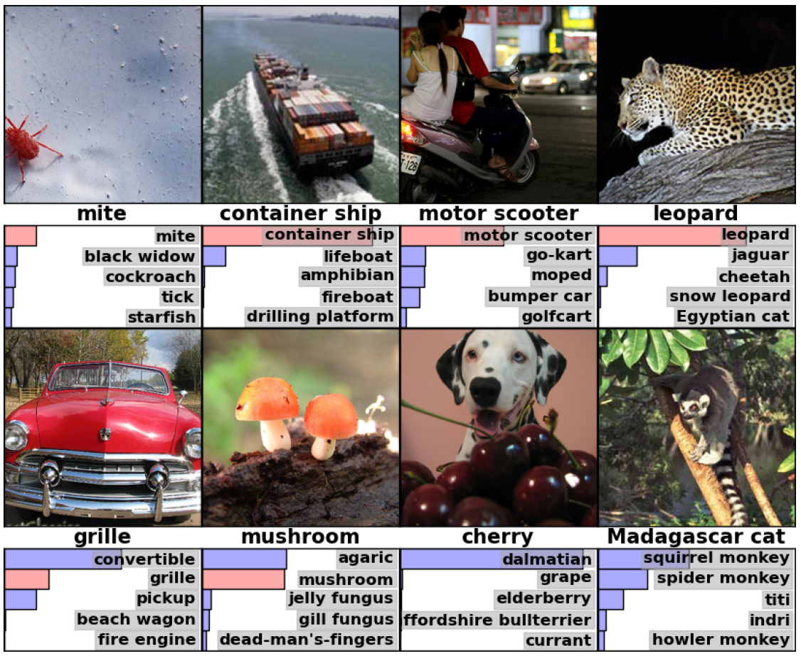
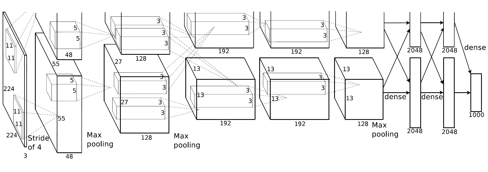
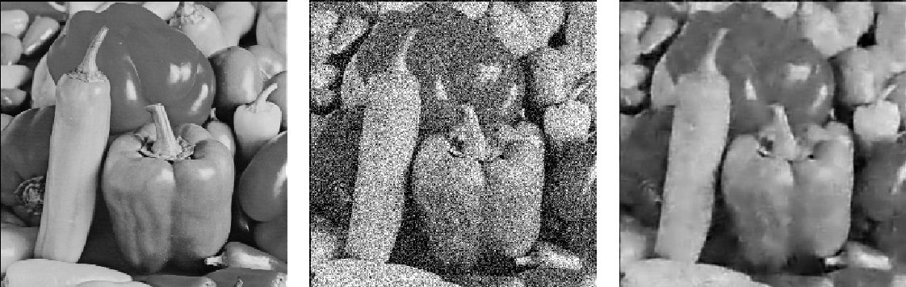
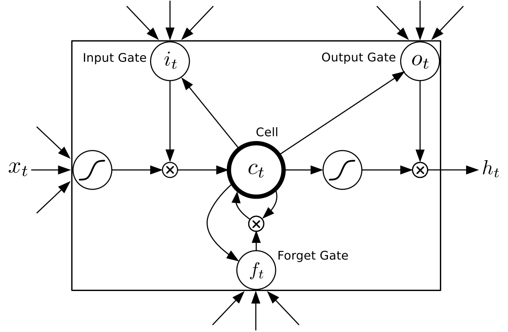
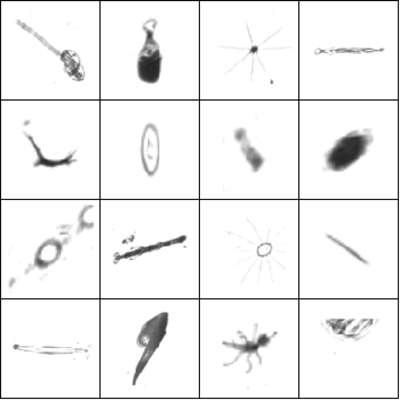
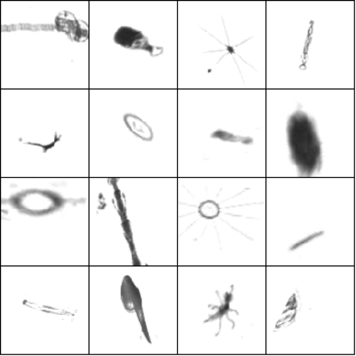

Neural NILM
Deep Neural Networks Applied To
Energy
Disaggregation
Jack Kelly
& William
Knottenbelt
Imperial College London
Energy Disaggregation
Aim: Itemised Energy Bills
Outline
- Why use deep neural nets (DNNs) for NILM?
- How DNNs work
- Three DNN architectures for NILM
- Data augmentation
- Results
- Summary
Outline
- Why use deep neural nets (DNNs) for NILM?
- How DNNs work
- Three DNN architectures for NILM
- Data augmentation
- Results
- Summary
Name the Appliance?
Face Recognition
Manual Feature Extraction

Deep Neural Nets
Automatic Feature Learning
ImageNet Large Scale Visual Recognition Challenge (ILSVRC)
From: Krizhevsky, Sutskever & Hinton. ImageNet Classification with Deep Convolutional Neural Networks. NIPS (2012)

Image from devblogs.nvidia.com
Krizhevsky et al.'s DNN Results on ImageNet 2012
Krizhevsky, Sutskever & Hinton. ImageNet Classification with Deep Convolutional Neural Networks. NIPS (2012)
Outline
- Why use deep neural nets (DNNs) for NILM?
- How DNNs work
- Three DNN architectures for NILM
- Data augmentation
- Results
- Summary
The Artificial Neuron
Image adapted from WikiMedia Commons image by Chrislb
{kind=link}
Feed Forward Nets
Krizhevsky et al.'s Architecture for ImageNet 2012
Krizhevsky, Sutskever & Hinton. ImageNet Classification with Deep Convolutional Neural Networks. NIPS (2012)
Training
Autoencoders
Autoencoder Examples
Hinton & Salakhutdinov. Reducing the dimensionality of data with neural networks. Science (2006)
Denoising Autoencoders
Image from Marc'Aurelio Ranzato
Vincent et al. Extracting and composing robust features with denoising autoencoders. ICML (2008)
Recurrent Neural Nets
Recurrent Neural Nets
Long Short-Term Memory (LSTM) Cells
Image from blog.otoro.net
Hochreiter & Schmidhuber. Long short-term memory. Neural Computation (1997)
Recurrent Neural Nets
Playing Volleyball :)
Outline
- Why use deep neural nets (DNNs) for NILM?
- How DNNs work
- Three DNN architectures for NILM
- Recurrent Neural Nets (LSTM)
- Denoising Autoencoder
- 'Bounding rectangle' around the target
- Data augmentation
- Results
- Summary
Recurrent Neural Nets
Denoising Autoencoders
Bounding Rectangle
Outline
- Why use deep neural nets (DNNs) for NILM?
- How DNNs work
- Three DNN architectures for NILM
- Data augmentation
- Results
- Summary
DNNs need lots of data!
Data Augmentation for Images of Plakton
Raw
Augmented
Data Augmentation for NILM
- Extract individual appliance activations from real data
- For each generated example:
- Randomly pick which appliances to include
- Randomly pick individual activations
- Randomly align activations
Outline
- Why use deep neural nets (DNNs) for NILM?
- How DNNs work
- Three DNN architectures for NILM
- Data augmentation
- Results
- Summary
Example Output
LSTM
Autoencoder
Rectangles
Metrics
Metrics on Seen Appliances
Metrics on Unseen Appliances
Outline
- Why use deep neural nets (DNNs) for NILM?
- How DNNs work
- Three DNN architectures for NILM
- Data augmentation
- Results
- Summary
Summary
- Developed 3 deep neural nets for NILM
- They perform better than NILMTK's CO or FHMM algorithms (on UK-DALE)
- Just scratched the surface!